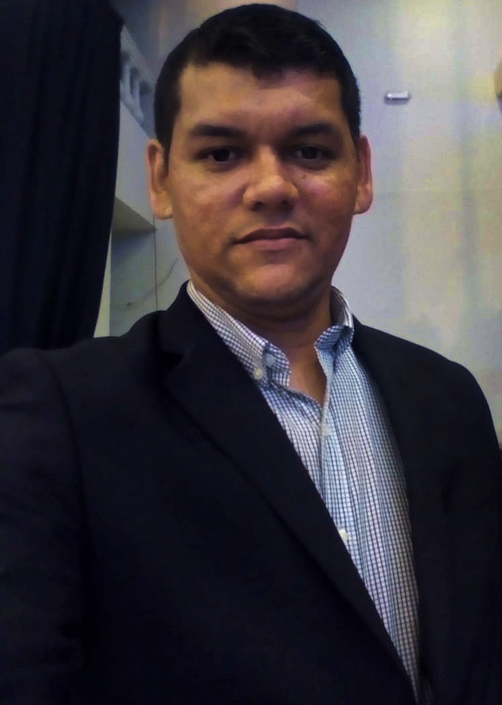

Carlos Renato de Lima Ferreira

Analista de Tecnologia da Informacão
Contato
Celular:(85)987584958
Email:cd.renato@hotmail.com
Objetivo
Sou um profissional sério,responsável e ágil. Sempre tento manter as tarefas
solicitadas
dentro dos padrões que abrangem os quesitos de eficiência,eficácia e efetividade.
Perfil profissional
Experiência em atendimento a clientes em geral e prestação de serviços
as demandas de suporte em Tecnologia da Informação.
Habilidades
Resolução de problemas e atendimento baseado no conhecimento da
Tecnologia da Informação.
Na área de sistemas operacionais,
redes, impressoras e periféricos.
Habilitação
Categoria: A
Experiência
-
Faz Empreendimentos e Serviços Eirelli-Epp.
Função: Operador de Microcomputador.
Período: Maio de 2015 - Outubro de 2017.
Telefone: (85) 3038-3838 / Setor de Recursos Humanos.
-
Rubert Tecnologia.
Função: Desenvolvedor de software trainee
Maio de 2018 -Empresa do ramo do VAREJO selecio
Escolaridade
- Faculdade Integrada Da Grande Fortaleza
Graduação em Análise de Sistemas de Computação, 2013 - 2017
-
Escola de Ensino Médio Mariano Martins.
Ensino Médio completo, 2001- 2003
Cursos profissionalizantes
Proditec - Programa de Difusão Tecnológica.
Básico de informática.
Módulos: Windows e Word 97.
Carga horária: 60h/a.